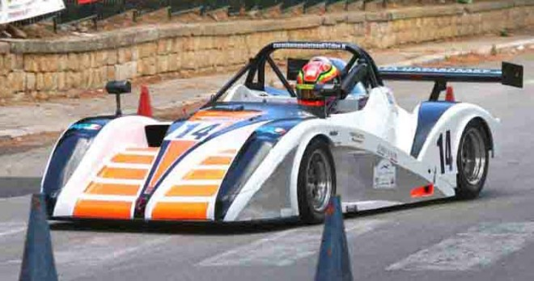

Il busetano Antonio Virgilio domina la 4ª edizione dello Slalom Monti Sicani Città di Prizzi

7 Agosto 2017 - Il busetano Antonio Virgilio domina alla quarta edizione dello Slalom Monti Sicani Città di Prizzi, organizzato dal Team Paliké, imponendosi sulla sua Radical SR4 Suzuki chiudendo con 93,50,
Basket
Ne da notizia la società granata con un comunicato stampa
Calcio
Nino Daì, dopo dieci stagioni sul campo, sarà il nuovo responsabile della Scuola Calcio del Trapani
Calcio
Un passo avanti, fugando le nubi dell?incertezza che si erano addensate sulla società.
Automobilismo
Sono centotrenta i piloti iscritti alla quindicesima edizione dello Slalom dell?Agro ericino in programma per domenica prossima.
Calcio
Oggi i pugliesi si sono trovati davanti il Trapani di Calori che aveva voglia di riscattare la prestazione incolore di Terni
Calcio
Si complica la rincorsa alla salvezza per la squadra granata
Motociclismo
Il percorso, bello ed impegnativo, prevedeva tre prove speciali
Basket
Pessime scelte nel finale di gara determinano l'ennesima sconfitta casalinga per i granata di Ducarello
Motociclismo
Si partirà giovedì 9 e venerdì 10 marzo con le prove di allenamento
Calcio
Un pareggio che sta benissimo agli ospiti